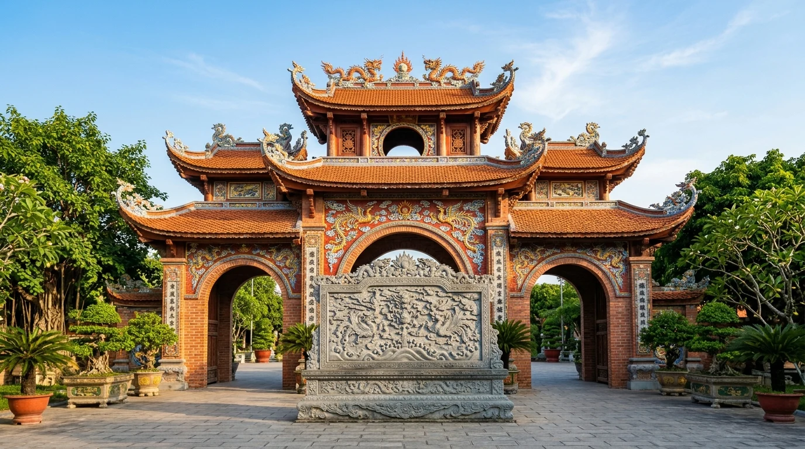

🧭 1. Tổng Quan Đền Ông Hoàng Mười — "Mỏ Hạc Linh Từ" Khởi Dựng Năm 1634 Bên Sông Lam
Theo tư liệu lịch sử địa phương và cổng thông tin tỉnh Nghệ An, ngôi đền được nhân dân làng Xuân Am khởi dựng từ năm 1634 (niên hiệu Đức Long thứ 6, triều vua Lê Thần Tông thời Hậu Lê). Trải qua thăng trầm binh lửa, từ năm 1995 đền được phục dựng trên nền móng cũ theo đúng quy thức kiến trúc cổ truyền Bắc Trung Bộ gồm Tam quan, Tắc môn, Đài Trung thiên, nhà Thủy tạ và ba tòa Tiền tế – Trung từ – Hậu cung chạm trổ long, lân, quy, phụng công phu, đồng thời lưu giữ 21 đạo sắc phong cùng hệ thống thần tích Hán Nôm giá trị.
Đền là trung tâm thờ chính Đức Thánh Hoàng Mười (Quan Hoàng Mười Nghệ An) trong Tín ngưỡng thờ Mẫu Tứ phủ — vị thần tài kiêm văn võ được giao trấn thủ đất Hoan Châu. Trong tâm thức lịch sử nhân dân xứ Nghệ, hình tượng Ông Hoàng Mười hội tụ bóng dáng các bậc danh tướng hộ quốc an dân từng gắn bó máu thịt với vùng đất này như Uy Minh Vương Lý Nhật Quang (hoàng tử thứ tám vua Lý Thái Tổ, tri châu Nghệ An) và đặc biệt là Chiêu Trưng Đại Vương Lê Khôi (cháu ruột vua Lê Thái Tổ, vị tướng kiệt xuất khởi nghĩa Lam Sơn trấn thủ Hoan Châu, hóa năm 1446). Ngay phía Đông chính điện Xuân Am còn bảo tồn khu Lăng mộ Đức Ông Hoàng Mười. Ngày 27/8/2019, Bộ VHTTDL đã ban hành Quyết định số 2970/QĐ-BVHTTDL ghi danh Lễ hội Đền Ông Hoàng Mười vào Danh mục Di sản văn hóa phi vật thể Quốc gia.
📜 2. Quy Chuẩn Hành Lễ Văn Minh Tại Đền Ông Hoàng Mười Xuân Am
Để bảo vệ không gian di sản văn hóa phi vật thể Quốc gia bên dòng sông Cồn Mộc – sông Lam thanh bình, du khách thập phương khi về Đền Ông Hoàng Mười cần tuân thủ:
🏮 3 Quy Chuẩn Tôn Nghiêm Tại Mỏ Hạc Linh Từ
🕯️ Thắp Hương Tại Đài Trung Thiên — Không Đốt Đồ Mã Lớn
Dâng hương tập trung tại Đài Trung thiên ngoài sân đá rộng rãi; hưởng ứng nếp sống văn minh không đốt ngựa giấy, voi giấy và vàng mã số lượng lớn trong khuôn viên di tích.
🏛️ Giữ Tôn Nghiêm Tại Hậu Cung & Khu Lăng Mộ Đức Ông
Ăn mặc lịch sự, đi nhẹ nói khẽ khi vào ba tòa Tiền tế – Trung từ – Hậu cung và khu vực Lăng mộ Đức Ông phía Đông; không gài tiền lẻ lên tượng thờ hay bia đá.
🌊 Bảo Vệ Cảnh Quan Sông Cồn Mộc Khi Thả Hoa Đăng
Trong dịp lễ hội tháng Mười Âm lịch, chỉ sử dụng hoa đăng giấy phân hủy sinh học theo hướng dẫn của Ban tổ chức, không thả xốp nhựa xuống dòng sông Cồn Mộc và sông Lam.
⛩️ 3. Lộ Trình 6 Trạm Hành Lễ Đền Ông Hoàng Mười (Xuân Am, Nghệ An)
Lộ trình 6 trạm đưa hành giả đi trọn vẹn quần thể Mỏ Hạc Linh Từ: từ Tam quan & Tắc môn thế đất Mỏ Hạc, dâng tâm hương tại Đài Trung thiên sân đá, qua Tiền tế & Trung từ chạm rồng phượng (1634), đảnh lễ Hậu cung Đức Thánh Hoàng Mười, bái yết Cung Tam Tòa Thánh Mẫu & khu Lăng mộ Đức Ông, và khép lại bên bến sông Cồn Mộc rước sắc hoa đăng.
Hành Trình Chiêm Bái Mỏ Hạc Linh Từ — Làng Xuân Am Xứ Nghệ
Thực hành nghi lễ dâng hương tôn nghiêm tại ngôi đền khởi dựng năm 1634 bên dòng sông Lam & sông Cồn Mộc.

Đền Ông Hoàng Mười mở ra uy nghi giữa không gian thoáng đãng của làng Xuân Am, nơi hai dòng sông Lam và sông Cồn Mộc uốn lượn ôm lấy dải đất tựa hình mỏ chim hạc thanh cao. Bước qua cổng Tam quan đồ sộ đắp nổi tứ linh và bức bình phong Tắc môn chạm cuốn thư long mã, du khách bước vào miền linh khí trầm mặc của xứ Nghệ.
🚪 Phép Qua Tam Quan & Tắc Môn Truyền Thống
- Đi vào theo cửa Tả, vòng nhẹ qua bức bình phong Tắc môn với thái độ khoan thai, khiêm cung.
- Chỉnh trang y phục kín đáo, tháo kính râm và mũ nón trước khi bước vào sân chầu.
- Sắp xếp lễ vật chay tịnh, hoa tươi sắc vàng hoặc đỏ thắm, không mang đồ vàng mã lớn vào sân.
🗺️ Địa Thế "Mỏ Hạc Linh Từ" Từ Năm 1634
- Tên chữ cổ 'Mỏ Hạc Linh Từ' xuất phát từ thế đất bồi ven sông hình đầu và mỏ chim hạc hướng về núi Dũng Quyết – Hồng Lĩnh.
- Ngôi đền được nhân dân làng Xuân Am khởi dựng lần đầu năm 1634 dưới triều vua Lê Thần Tông.
- Sau đợt sắp xếp hành chính năm 2025 (NQ 1678/NQ-UBTVQH15), làng Xuân Am thuộc xã Hưng Nguyên mới, tỉnh Nghệ An.
🗺️ 4. Lịch Trình 1 Ngày Hành Hương Đền Ông Hoàng Mười — Làng Sen Quê Bác — Phượng Hoàng Trung Đô
Từ làng Xuân Am (Hưng Nguyên, Nghệ An), du khách dễ dàng kết nối với các di tích lịch sử đặc biệt của xứ Nghệ chỉ trong bán kính 7–15 km:
Buổi Sáng (07h30 – 11h30): Lộ Trình 6 Trạm Đền Ông Hoàng Mười — Đền Vua Mai / Núi Dũng Quyết
- 07h30: Từ trung tâm Vinh hoặc nút giao cao tốc Hưng Tây di chuyển dọc đường ven đê sông Lam về làng Xuân Am, xã Hưng Nguyên.
- 08h00: Thực hiện trọn vẹn lộ trình 6 trạm hành lễ tại Đền Ông Hoàng Mười và khu Lăng mộ Đức Ông.
- 10h15: Ghé thăm Đền thờ Hoàng đế Quang Trung trên núi Dũng Quyết (Phượng Hoàng Trung Đô) ngắm toàn cảnh ngã ba Bến Thủy – sông Lam từ trên cao.
Buổi Trưa (11h45 – 13h30): Thưởng Thức Ẩm Thực Truyền Thống Xứ Nghệ
Nghỉ trưa thưởng thức đặc sản súp lươn / miến lươn xứ Nghệ cay nồng ấm áp, bánh bèo Vinh, nhút Thanh Chương, tương Nam Đàn và chè xanh om nóng.
Buổi Chiều (14h00 – 17h00): Khu Di Tích Quốc Gia Đặc Biệt Kim Liên (Làng Sen – Hoàng Trù) — Về Hà Nội
- 14h00: Dâng hương tại Khu di tích Quốc gia đặc biệt Kim Liên (Nam Đàn — cách Xuân Am ~15 km), thăm mái nhà tranh đơn sơ làng Hoàng Trù và Làng Sen quê hương Chủ tịch Hồ Chí Minh.
- 16h00: Lên cao tốc Bắc – Nam hoặc ra ga Vinh / sân bay Vinh khép lại hành trình ý nghĩa.